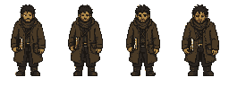
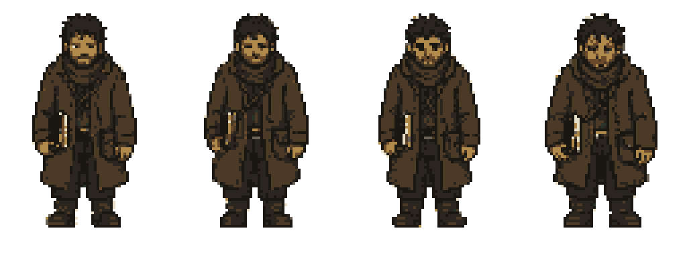

That gives you a screen 20 tiles wide × ~11 tall, with Kalev occupying 2 tiles wide × 3 tiles tall. Kalev's silhouette is ~10% of the screen's width and ~27% of its height — closer to a Sea of Stars / Chained Echoes hero than a Stardew Valley one. Tighter framing, more presence per character.
2. Scale ruler — what these numbers mean side by side
Each shape below is drawn at 2 screen-pixels per game-pixel, so you can actually see them. Same scale across all four panels.
Tile32 × 32
Birdie / child48 × 64
Kalev / hero adult64 × 96
Bedside patient96 × 48
character · tile
3. The actual Kalev sprite, at three zooms
This is the only sprite that exists today (art/characters/kalev/sheets/kalev_idle_front_64x96.png). Pass 1a — 4-frame breath cycle.

1× (native — what Godot ships)2× (close to on-screen size at stretch=viewport)

4× zoom (review only, never shipped)
4. What it looks like in-frame
Simulated 640×360 viewport at half-scale. Grid cells are tiles. Ochre = Kalev, brown = an NPC at 48×72, dark = a bedside patient at 96×48.
640 × 360 viewport · 20 × ~11 tiles · grid = 32px
Hero is small enough that ~6 NPCs + props can share a frame; large enough that a face animation is legible without zooming.
5. Where you sit on the indie pixel-art map
Game
Tile
Character
Viewport (logical)
Closeness to your spec
Stardew Valley
16 × 16
~16 × 32
~400 × 240
half your fidelity
Hyper Light Drifter
16 × 16
~24 × 32
480 × 270
half-fidelity, atmosphere-led
Eastward
16 × 16
~32 × 48
~480 × 270
same proportions, ½ resolution
CrossCode
16 × 16
~32 × 48
568 × 320
closest in spirit
Tincture of Mercy
32 × 32
64 × 96
640 × 360
— you are here —
Sea of Stars
~32 × 32
~48 × 96
~640 × 360
very close, slightly chunkier hero
Chained Echoes
32 × 32
~48 × 96
~640 × 360
very close
Octopath Traveler (HD-2D)
~32 × 32
~64 × 96
3D-rendered
same sprite scale, different stack
Take-away: you are firmly in the "high-fidelity 32-tile JRPG" band. You are not in the chunky-Stardew band, and you are not in the boutique-Hyper-Light band. Sea of Stars and Chained Echoes are the closest mood-board references for what your fidelity will support.
6. The tradeoffs you bought, and the ones you sold
What 64×96 + 32-tile gets you
Faces are legible. A face fits in ~16×16 inside the head. That's enough to read fear, attention, exhaustion — the whole point of a mercy game.
Hands and held objects. Bread, a kettle, a tincture vial, a notebook, the boy's shoulder — all of these can be drawn as readable shapes on a 64-wide sprite. At 32-wide they would be smudges.
Bedside scenes work. A 128×64 patient under blankets reads as a person, not a lump. This is non-negotiable for your Act-2 cabin material.
What you paid for it
Animation cost. A 64×96 frame has 4× the pixels of a 32×48 frame. Every walk cycle, every recoil, every "administer ember" pose is 4× the pixel-art labor — and you are one developer.
Palette discipline matters more. At this size, color drift is visible. That is exactly why your pipeline pins ≤48 colors per sheet and runs validate_sprite.py. Without that gate, the art would look like 2014 RPG-Maker assets within a month.
Fewer characters on screen. A wolf pack on a 30-tile-wide screen is 4–5 wolves, not 12. Encounter design has to lean on staging and sequence, not crowd density.
Tilesets are bigger jobs. 32×32 tiles need ~4× the painting effort per tile vs 16×16. You will feel this when the cabin and the road both need their own tileset.
7. Where you're pushing too hard, where you have headroom
Solid — keep doing this
The source → runtime → polish pipeline. This is the single biggest reason your art will stay coherent as a solo dev.
Per-character palettes (Kalev gets old-ochre for skin). This is what separates "indie pixel art" from "AI pixel-art-styled illustration."
32×32 tiles + 64×96 hero. The proportions are correct — you are at the same ratio as Sea of Stars and Chained Echoes, both 1-to-2-person teams that shipped.
Pushing the limits — watch this
Animation count. Kalev's full set (idle×4dir, walk×4dir, plus care/combat verbs) is ~150–200 frames. At your fidelity that's ~40–80 hours of polish even with the pipeline doing bulk work.
Bedside sprite variety. 96×48 / 128×64 is unusual; comparable games rarely have this. Powerful but every patient is bespoke art.
Multi-character combat scenes. Wolves on the road = a lot of large sprites overlapping. Plan staging now.
Don't escalate further
Don't go to 96×144 or higher for "important" characters. You'd be in Owlboy / Iconoclasts territory — those are 5–8 year, multi-person projects.
Don't add a second tile size. Mixing 32 and 16 tiles is a snap-grid nightmare. One size, no exceptions.
Don't add 8-direction movement if it implies 8-direction sprites. 4-direction × your verb count is already the bigger animation budget than most solo devs ship.
Don't add normal maps / dynamic lighting on sprites yet. It will eat the pipeline gains.
8. Room you actually have to push
Environmental detail. 32×32 tiles can carry a lot. Look at Sea of Stars' interiors — yours can match that without changing any number on this page.
Lighting via shaders, not sprites. Hearth glow, lantern falloff, cabin warmth — your shaders/ folder is the cheap-and-strong direction here. vellum_paper.gdshader and tremor.gdshader are already on this track.
Camera & framing. Push in for bedside scenes. Pull out for the wolves road. The viewport doesn't have to feel the same in every act.
Silhouette work. 64-wide gives you room to make every NPC silhouette unique at a glance. Don't waste it on detail; spend it on shape.
9. One sentence to remember
You picked a high-fidelity-but-not-boutique spot on the indie pixel-art map. It's the same spot Sea of Stars and Chained Echoes picked — defensible for a small team, but only if the palette pipeline and animation-count discipline hold.
Generated 2026-05-10 from design_system/v0_9_mercy_rpg_substrate/10-asset-pipeline.md, 09-naming-conventions.md, project.godot, and CLAUDE.md. Ephemeral review surface — not canon.